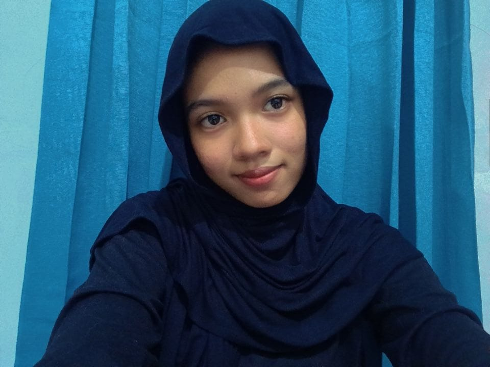
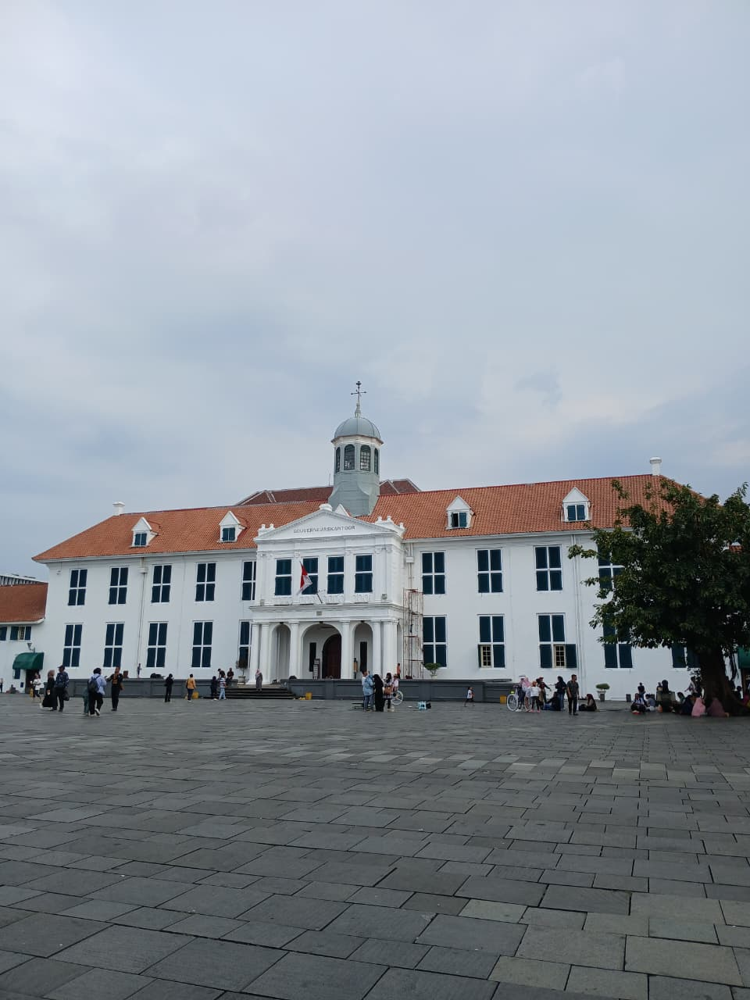
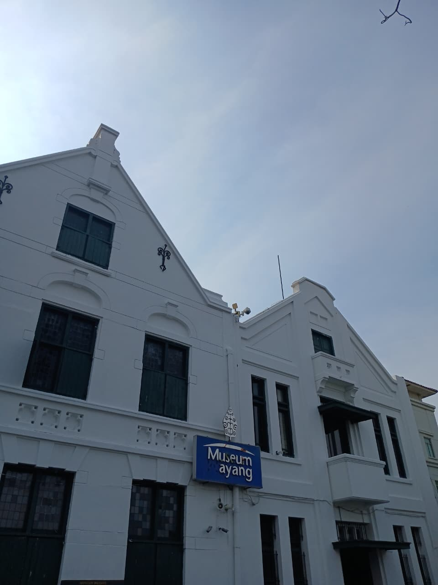
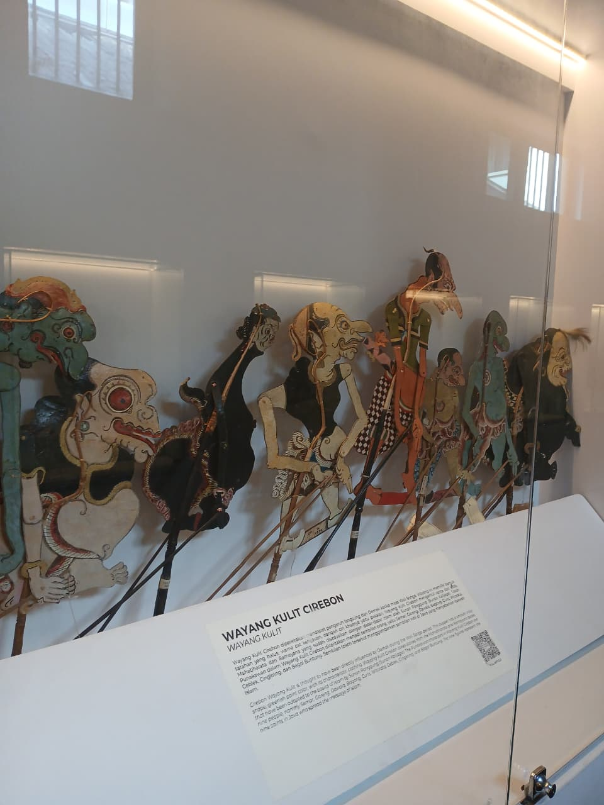

Mahasiswa Sistem Informasi | Programmer Pemula | Fotografer
Lihat Karya Saya
Sebuah foto megah dari Museum Fatahillah (juga dikenal sebagai Museum Sejarah Jakarta). Bangunan kolonial berwarna putih dengan atap merah dan menara kecil di tengahnya ini berdiri tegak di depan lapangan luas yang beralaskan batu (plaza).

Gedung ini memiliki gaya arsitektur Neo-Renaissance. Ciri khasnya terlihat pada dua fasad bangunan yang menyerupai bentuk gunungan dalam pewayangan, dengan jendela kayu jati yang besar dan langit-langit tinggi.

Wayang Kulit Cirebon, yang memiliki ciri khas sebagai gaya "pesisiran". Koleksi ini menampilkan berbagai tokoh pewayangan yang disusun berjajar. Wayang kulit ini dibuat dari kulit hewan (seperti kerbau atau sapi) dan digunakan sebagai media seni pementasan tradisional serta sejarah dakwah di masa lampau.